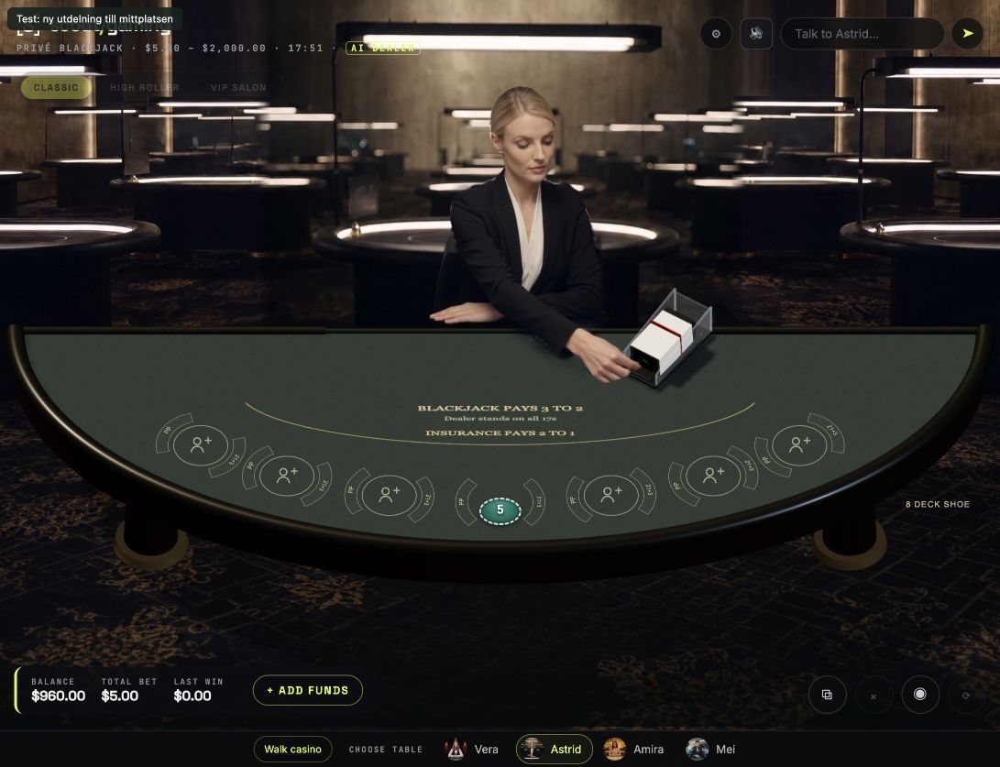
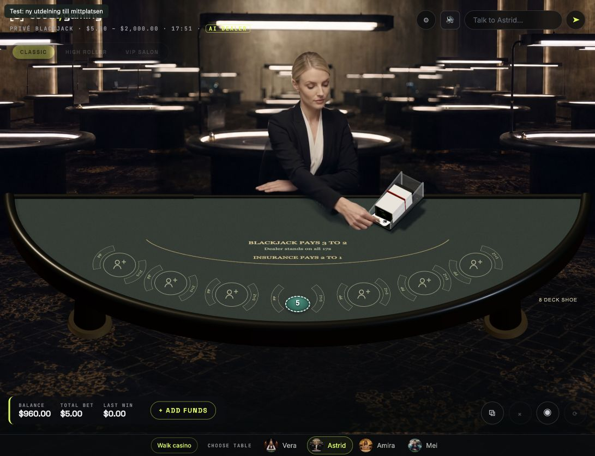
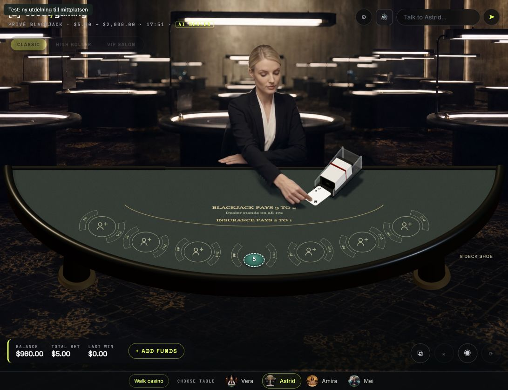
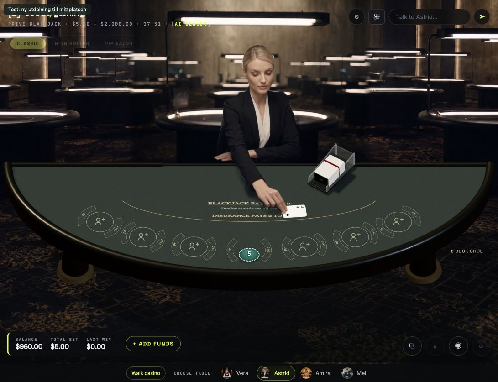
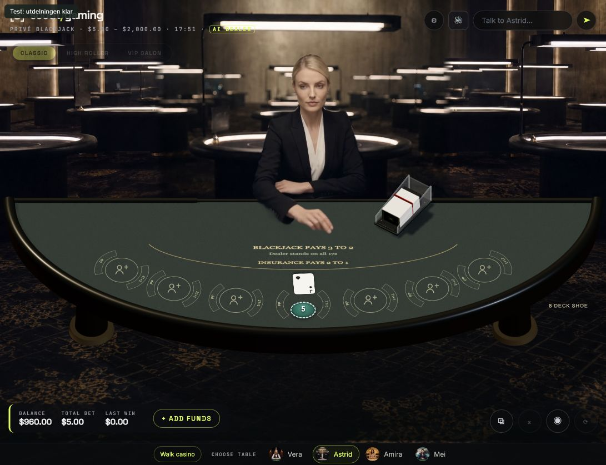
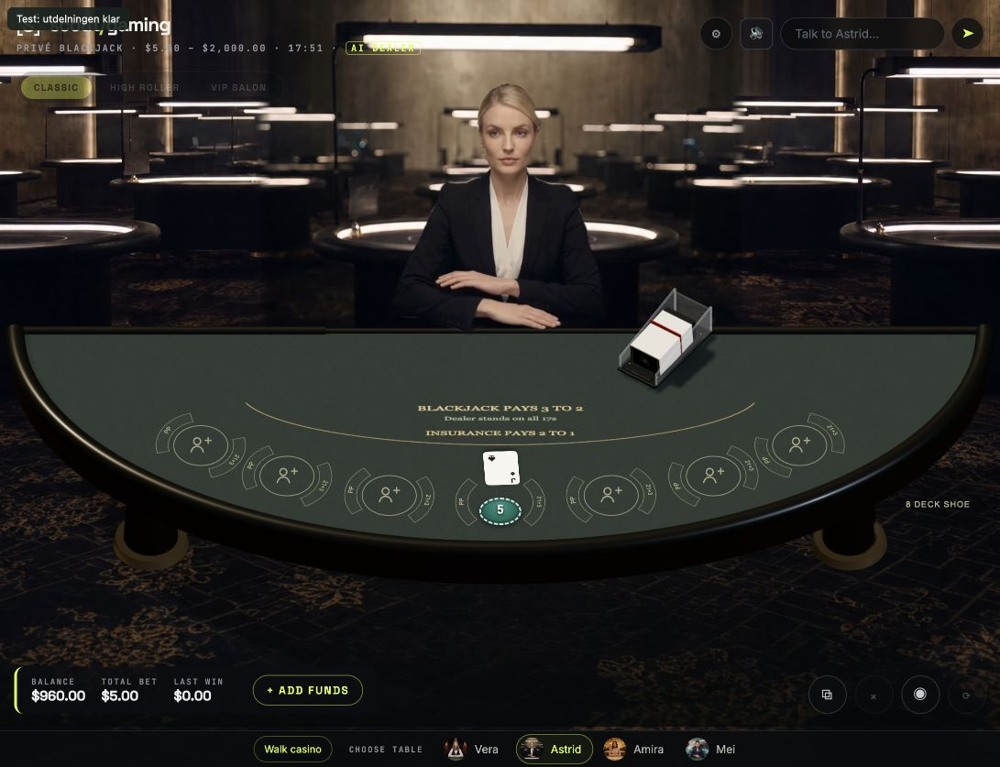
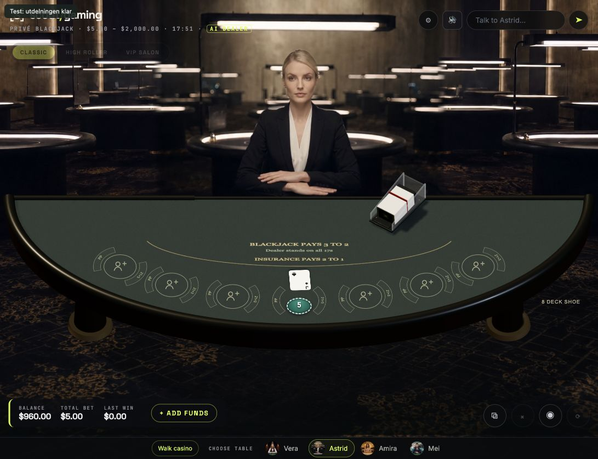
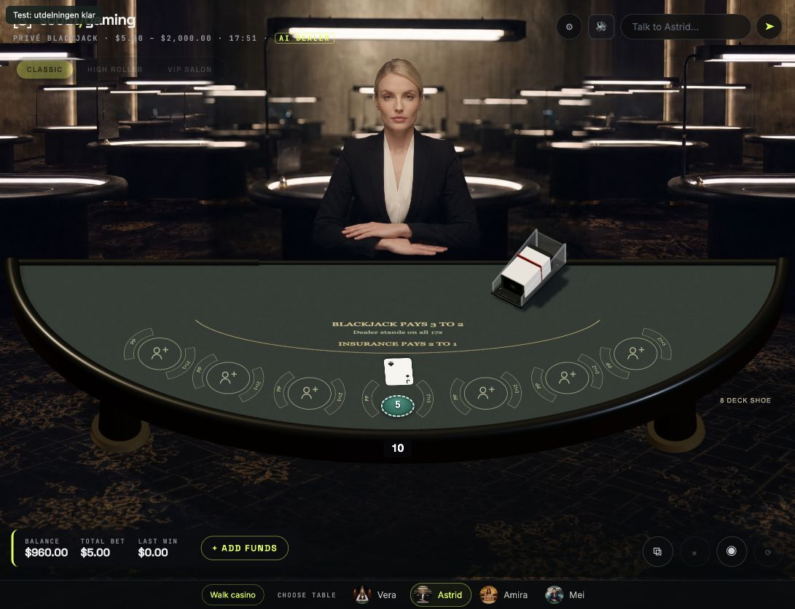

Faktiska bilder från en spelrunda i den isolerade spelvyn. Samma serverutdelade kort följs från skon till nedläggning och tom hand tillbaka. Detta gäller mittplatsens första kort.
Arbetsprov: ingen fysisk kortvändning ännu. Följande kort och övriga platser är inte färdigställda. Stillbilderna visar kontakt och placering; de bevisar inte jämn rörelse eller sömlösa övergångar.







